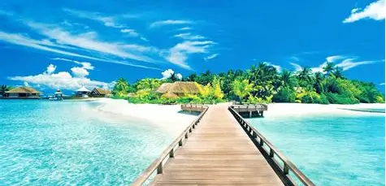
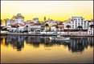

Informação
Melhor local para férias!
| Informações Gerais de Portimão | ||
|---|---|---|
| População | Cidade | ≈ 50 000 habitantes |
| Município | ≈ 60 000 habitantes | |
| Área | 182 km² | |

Curiosidades sobre Portimão
- Portimão já foi uma das maiores zonas conserveiras do Algarve.
- A Praia da Rocha é uma das praias mais famosas de Portugal.
- O Autódromo Internacional do Algarve recebe eventos como MotoGP.
- O Rio Arade foi essencial para o desenvolvimento da cidade.
- Portimão tem um dos maiores festivais de sardinha do país.
